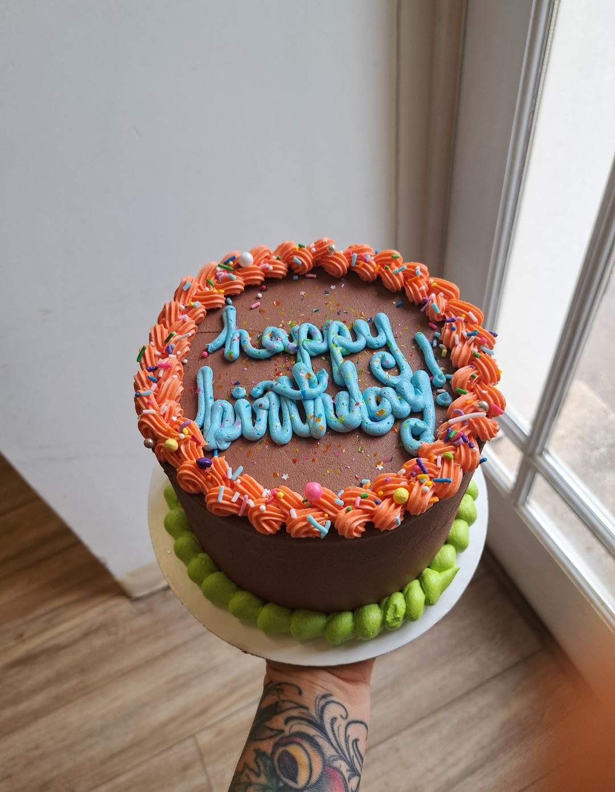
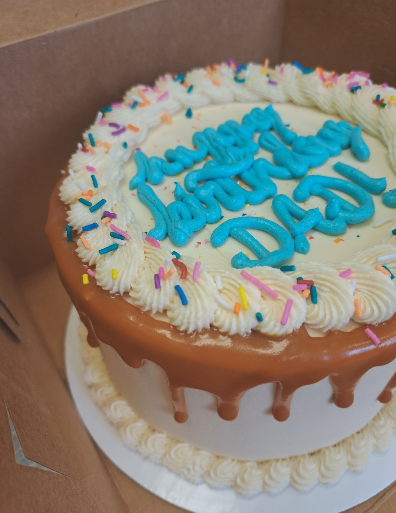
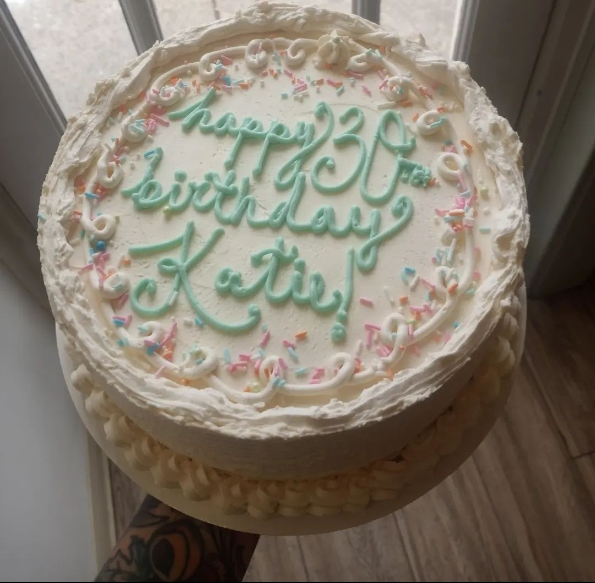

<!DOCTYPE html>
<html lang="en">
<head>
   <meta charset="UTF-8">
   <meta http-equiv="X-UA-Compatible" content="IE=edge">
   <meta name="viewport" content="width=device-width, initial-scale=1.0">
   <title>Document</title>
   <link rel="stylesheet" type="text/css" href="styles.css"/>
   <link rel="preconnect" href="https://fonts.googleapis.com">
<link rel="preconnect" href="https://fonts.gstatic.com" crossorigin>
<link href="https://fonts.googleapis.com/css2?family=IBM+Plex+Mono:wght@500&display=swap" rel="stylesheet">
<link rel="preconnect" href="https://fonts.googleapis.com">
<link rel="preconnect" href="https://fonts.gstatic.com" crossorigin>
<link href="https://fonts.googleapis.com/css2?family=Unica+One&display=swap" rel="stylesheet">
</head>
<body>
   
</body>
</html>  
<html>
   <head>
      <title>Edible Art: Cake Decorating Basics</title>
      
   </head>
   <body>
      <header>
         <h1 id="page-title">ICING ON THE CAKE</h1>
         <h2 id="tagline">&hearts; butter &hearts; sugar &hearts; endless possibilities &hearts;</h2>
      </header>

      <main>
         <!-- intro -->
         <section>
            
            <p id="intro">
            Cake is a symbol of celebration. Because it has a rich, sweet flavor and is associated with special 
            occasions and milestones, eating cake is a ritual that reminds us to savor the moment. 
            Cake is typically served where people gather to celebrate and share in the joy of the occasion. Cake is a 
            sensory experience for the tastebuds of course, and it's also an aesthetically expressive outlet! 
            With a few tools and some imagination, you can make your own curated work of edible art for 
            your next celebratory event- or just to celebrate your own artistry! 
            </p>
            
            <p2>
            A simple, crowd-pleasing vanilla cake with buttercream frosting is a great place to start
            your cake decorating journey- it's a blank canvas! Browned butter adds dimension to a classic vanilla cake,
            and American buttercream, while much sweeter and richer than European buttercream varieties,
            is the perfect medium to create texture using <a href=https://www.wilton.com/learn-piping-techniques/ target="_blank"> piping techniques.</a> American
            buttercream is also fairly stable (with a low water content) so it holds colorings well- everything from delicate pastels 
            to saturated neons. Gel food coloring, <a href=https://www.bedbathandbeyond.com/store/s/offset-spatula/ target="_blank"> an offset spatula</a>, <a href=https://www.webstaurantstore.com/ateco-334-8-piece-stainless-steel-piping-tip-decorating-set-august-thomsen/144334.html?utm_source target="_blank"> piping bags & tips</a>, and a <a href="https://www.atecousa.com/decorating-turntables.html" target="_blank"> turntable</a>
            are the basic physical tools worth the investment to realize your decorating dreams. 
            </p2>
            
            <p3 >
            While baking your cake, whip up the buttercream recipe. Let your cakes cool <i>completely</i>, and/or chill
            before building a layered cake to frost. After cakes are cool and <a href="https://www.youtube.com/watch?v=6hNxFPiW2OM" target="_blank"> leveled</a>
            spread an even layer of buttercream on the bottom round. Place your other round on top, and use an offset spatula to cover the cake in a thin layer of buttercream. Chill for 20 minutes,
            and you're ready to go! 
            <br>
            <br>
            <br>
            <br>
            </p3>

         </section>

         <article>

         <!-- bc ingredients section-->
            <section>
            
            
         <h3>American Buttercream</h3>
         <h4>Ingredients</h4>
         <ul>
            <li>452g unsalted butter, room temperature</li>
            <li>12g vanilla extract or vanilla bean paste</li>
            <li>5g fine salt</li>
            <li>907g powdered sugar</li>
            <li>45g heavy cream</li>
         </ul>
            </section>

         <!-- bc directions section -->
            <section>
            
         <h4>Buttercream Method</h4>
         <ol>
            <li>Beat butter on medium speed for 1-2 minutes until smooth and glossy using the paddle attachment on a stand mixer.</li>
            <li>Mix vanilla extract or vanilla bean paste and salt on low speed.</li>
            <li>Slowly add powdered sugar while mixing on the lowest setting. Halfway through add in heavy cream.</li>
            <li>Mix on low until the ingredients are fully incorporated and the desired consistency is reached. </li>
            <li>If the frosting is too thick, add in additional cream, slowly. If the frosting is too thin, add in more powdered sugar, slowly. It should be the consistency of mayo!</li>
            <li>If you plan to color the buttercream, add in the gel food coloring once the frosting is fully mixed and beat on low until it reaches the desired color.</li>
            <li>To make the frosting extra smooth, stir it by hand with a rubber spatula for a minute or two right before you use it.</li>
         </ol>
         
            </section> 

         <!-- cake ingredients section -->
            <section>
         <h3>Brown Butter Vanilla Cake</h3>
         <h4>Ingredients</h4>
         <ul>
            <li>281g all-purpose flour</li>
            <li>10g baking powder</li>
            <li>4g salt</li>
            <li>170g brown butter, room temperature, solid</li>
            <li>200g granulated sugar</li>
            <li>110g light brown sugar packed</li>
            <li>3 large eggs, room temperature</li>
            <li>7g vanilla</li>
            <li>244g milk, room temperature</li>
         </ul>
            </section>
         
         <!-- cake directions section -->
            <section>
            <h4>Cake Method</h3>
            <h5>Brown Butter</h5>
            <ol>
            <li>Place 454g butter into a large, shallow, light colored saucepan. Cook over med-low heat, stirring frequently until the butter starts to brown in color and smell nutty.</li>
            <li>Immediately transfer to bowl or large measuring cup. Be sure to scrape in the brown bits. Divide in half. Let cool to room temperature and solidify.</li>
            </ol>
            <h5>Cake</h5>
            
            <ol>        
            <li>Preheat oven to 350F.</li>
            <li>Grease and flour two 8″ cake rounds and line with parchment.</li>
            <li>In a medium bowl, whisk flour, baking powder, and salt until well combined. Set aside.</li>
            <li>Using a stand mixer fitted with a paddle attachment, cream browned butter and sugars on med-high until pale and fluffy (approx 3mins). </li>
            <li>Reduce speed and add eggs one at a time fully incorporating after each addition. Add vanilla.</li>
            <li>Alternate adding flour mixture and milk, beginning and ending with flour (3 additions of flour and 2 of milk). Fully incorporate after each addition.</li>
            <li>Bake for 45mins or until a toothpick inserted into the center comes out mostly clean.</li>
            <li>Place cakes on wire rack to cool for 10mins then turn out onto wire rack and cool completely.</li>
            </ol>
            </section>

      </article>

      </main>

      <footer>
         <b>&copy; 2023 </b>
      </footer>
      
   </body>

</html>